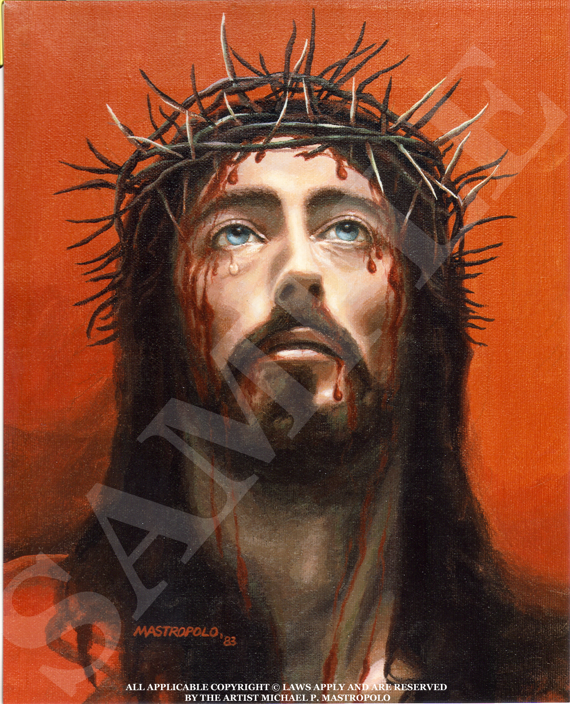

|
 |
As I gaze upon his disfigured, bloody, battered, divine face, I am filled with an intense shocking horror, and yet he weeps for me, shedding a tear of white.
The thorns are so long and sharp, piercing his beautiful face, some penetrating deeply into his skull, and yet he weeps for me, shedding a tear of white.
The blood, the bright red blood, the most precious blood, is profusely dripping down his holy face, and yet he weeps for me, shedding a tear of white.
Here is a worthy man in the prime of his life. He willingly decides to take on my sins as his own. He decides to die in my place, for as the Bible says, "the wages of sin is death", and yet he weeps for me, shedding a tear of white.
Jesus the King of kings wears a crown of thorns upon his most sacred head. He deserves to wear a glorious crown of the finest gold and most precious jewels, and yet he weeps for me, shedding a tear of white.
This is God's only son, obedient to his father's will, even unto death. He is being led like an innocent lamb to the slaughter, just for my redemption. He is beaten, battered, scourged, and spat upon, and yet he weeps for me, shedding a tear of white.
Behold this Jesus, who is raised by the blessed Mary and her husband Joseph. He was held in his mother's loving arms as a baby and worked with his carpenter dad as a boy. This same Jesus will be crucified on the tree just for me, and yet he weeps for me, shedding a tear of white.
This is Jesus, my king, my lord, and my savior, who loves me unconditionally. He is the King of hearts, whose heart is full of compassion and kindness. He weeps for me now, shedding that tear of white, expressing his infinite, overwhelming, and forgiving love that has the power to set me free and give me eternal life.
This is Jesus, The Christ, becoming the ultimate sacrifice. He consents to his painful passion taking on all the iniquities of all time, culminating in the tear of red, and yet he still weeps for us. He weeps for whatever pain or struggle we are going through, showing his compassion, shedding the tear of white.
A meditation by Michael Mastropolo, 2005
|


{kind=link}